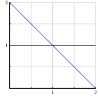

Subsection 4.7.1 Partial pivoting
The first issue that we will address is the fact that computers do not perform arithemtic operations exactly. For instance, if we ask Python to evaluate
0.1 + 0.2, it reports
0.30000000000000004 though we know that the true value is 0.3.
There are a couple of reasons for this. First, computers perform arithmetic using base 2 numbers, which means that numbers we enter in decimal form, such as \(0.1\text{,}\) must be converted to base 2. Even though 0.1 has a simple decimal form, its representation in base 2 is the repeating decimal
\begin{equation*}
0.000110011001100110011001100110011001100110011\ldots\text{.}\text{,}
\end{equation*}
To accurately represent this number inside a computer would require infinitely many digits. Since a computer can only hold a finite number of digits, we are necessarily using an approximation just by representing this number in a computer.
In addition, arithmetic operations, such as addition, are prone to error. To keep things simple, suppose we have a computer that represents numbers using only three decimal digits. For instance, the number 1.023 would be represented as 1.02 while 0.023421 would be 0.0234. If we add these numbers, we have 1.023 + 0.023421 = 1.046421; the computer reports this sum as 1.02 + 0.0234 = 1.04, whose last digit is not correctly rounded. Generally speaking, we will see this problem, which is called round off error, whenever we add numbers of signficantly different magnitudes.
Remember that Gaussian elimination, when applied to an \(n\times n\) matrix, requires approximately \(\frac 23
n^3\) operations. If we have a \(1000\times1000\) matrix, performing Gaussian elimination requires roughly a billion operations, and the errors introduced in each operation could accumulate. How can we have confidence in the final result? We can never completely avoid these errors, but we can take steps to mitigate them. The next activity will introduce one such technique.
Activity 4.7.2.
Suppose we have a hypothetical computer that represents numbers using only three decimal digits. We will consider the linear system
\begin{equation*}
\begin{alignedat}{3}
0.0001x \amp {}+{} \amp y \amp {}={} \amp 1 \\
x \amp {}+{} \amp y \amp {}={} \amp 2\text{.} \\
\end{alignedat}
\end{equation*}
Show that this system has the unique solution
\begin{equation*}
\begin{aligned}
x \amp {}={} \frac{10000}{9999} = 1.00010001\ldots, \\
y \amp {}={} \frac{9998}{9999} = 0.99989998\ldots\text{.}
\end{aligned}
\end{equation*}
If we represent this solution inside our computer that only holds 3 decimal digits, what do we find for the solution? This is the best that we can hope to find using our computer.
Let’s imagine that we use our computer to find the solution using Gaussian elimination; that is, after every arithmetic operation, we keep only three decimal digits. Our first step is to multiply the first equation by 10000 and subtract it from the second equation. If we represent numbers using only three decimal digits, what does this give for the value of \(y\text{?}\)
By substituting our value for \(y\) into the first equation, what do we find for \(x\text{?}\)
Compare the solution we find on our computer with the actual solution and assess the quality of the approximation.
Let’s now modify the linear system by simplying interchanging the equations:
\begin{equation*}
\begin{alignedat}{3}
x \amp {}+{} \amp y \amp {}={} \amp 2 \\
0.0001x \amp {}+{} \amp y \amp {}={} \amp 1\text{.} \\
\end{alignedat}
\end{equation*}
Of course, this doesn’t change the actual solution. Let’s imagine we use our computer to find the solution using Gaussian elimination. Perform the first step where we multiply the first equation by 0.0001 and subtract from the second equation. What does this give for \(y\) if we represent numbers using only three decimal digits?
Substitute the value you found for \(y\) into the first equation and solve for \(x\text{.}\) Then compare the approximate solution found with our hypothetical computer to the exact solution.
Which approach produces the most accurate approximation?
This activity demonstrates how the practical aspects of computing differ from the theoretical. We know that the order in which we write the equations has no effect on the solution space; row interchange is one of our three allowed row operations in the Gaussian elimination algorithm. However, when we are only able to perform arithmetic operations approximately, applying row interchanges can dramatically improve the accuracy of our approximations.
If we could compute the solution exactly, we find
\begin{equation*}
x = 1.00010001\ldots, \qquad
y = 0.99989998\ldots\text{.}
\end{equation*}
Since our hypothetical computer represents numbers using only three decimal digits, our computer finds
\begin{equation*}
x \approx 1.00, \qquad y \approx 1.00.
\end{equation*}
This is the best we can hope to do with our computer since it is impossible to represent the solution exactly.
When the equations are written in their original order and we multiply the first equation by 10000 and subtract from the second, we find
\begin{equation*}
\begin{aligned}
(1-10000)y \amp {}={}2-10000 \\
-9999 y \amp {}={} -9998 \\
-10000y\amp {}\approx{} -10000 \\
y \amp {}\approx{} 1.00\text{.} \\
\end{aligned}
\end{equation*}
In fact, we find the same value for \(y\) when we interchange the equations. Here we multiply the first equation by 0.0001 and subtract from the second equation. We then find
\begin{equation*}
\begin{aligned}
(1-0.0001)y \amp {}={}2-0.0001 \\
-0.9999 y \amp {}={} -0.9998 \\
-y\amp {}\approx{} -1.00 \\
y \amp {}\approx{} 1.00\text{.} \\
\end{aligned}
\end{equation*}
The difference occurs when we substitute \(y\approx 1\) into the first equation. When the equations are written in their original order, we have
\begin{equation*}
\begin{aligned}
0.0001x + 1.00 \amp {}\approx{} 1.00 \\
0.0001x \amp {}\approx{} 0.00 \\
x \amp {}\approx{} 0.00\text{.} \\
\end{aligned}
\end{equation*}
When the equations are written in their original order, we find the solution \(x\approx 0.00, y \approx 1.00\text{.}\)
When we write the equation in the opposite order, however, substituting \(y\approx 1\) into the first equation gives
\begin{equation*}
\begin{aligned}
x + 1.00 \amp {}\approx{} 2.00 \\
x \amp {}\approx{} 1.00\text{.} \\
\end{aligned}
\end{equation*}
In this case, we find the approximate solution \(x\approx 1.00,
y\approx1.00\text{,}\) which is the most accurate solution that our hypothetical computer can find. Simply interchanging the order of the equation produces a much more accurate solution.
We can understand why this works graphically. Each equation represents a line in the plane, and the solution is the intersection point. Notice that the slopes of these lines differ considerably.

When the equations are written in their original order, we substitute \(y\approx1\) into the equation \(0.00001x + y = 1\text{,}\) which is a nearly horizontal line. Along this line, a small change in \(y\) leads to a large change in \(x\text{.}\) The slight difference in our approximation \(y\approx
1\) from the exact value \(y=0.9998999\ldots\) leads to a large difference in the approximation \(x\approx0\) from the exact value \(x=1.00010001\ldots\text{.}\)
If we exchange the order in which the equations are written, we substitute our approximation \(y\approx 1\) into the equation \(x+y=2\text{.}\) Notice that the slope of the associated line is \(-1\text{.}\) On this line, a small change in \(y\) leads to a relatively small change in \(x\) as well. Therefore, the difference in our approximation \(y\approx1\) from the exact value leads to only a small difference in the approximation \(x\approx1\) from the exact value.
This example motivates the technique that computers usually use to perform Gaussian elimation. We only need to perform a row interchange when a zero occurs in a pivot position, such as
\begin{equation*}
\left[\begin{array}{rrrr}
1 \amp -1 \amp 2 \amp 2 \\
0 \amp 0 \amp -3 \amp 1 \\
0 \amp 2 \amp 2 \amp -3 \\
\end{array}\right]\text{.}
\end{equation*}
However, we will perform a row interchange to put the entry having the largest possible absolute value into the pivot position. For instance, when performing Gaussian elimination on the following matrix, we begin by interchanging the first and third rows so that the upper left entry has the largest possible absolute value.
\begin{equation*}
\left[\begin{array}{rrrr}
2 \amp 1 \amp 2 \amp 3 \\
1 \amp -3 \amp -2 \amp 1 \\
-3 \amp 2 \amp 3 \amp -2 \\
\end{array}\right]
\sim
\left[\begin{array}{rrrr}
-3 \amp 2 \amp 3 \amp -2 \\
1 \amp -3 \amp -2 \amp 1 \\
2 \amp 1 \amp 2 \amp 3 \\
\end{array}\right]\text{.}
\end{equation*}
This technique is called partial pivoting, and it means that, in practice, we will perform many more row interchange operations than we typically do when computing exactly by hand.
Subsection 4.7.2 \(LU\) factorizations
In
Subsection 2.3.2, we saw that the number of arithmetic operations needed to perform Gaussian elimination on an
\(n\times n\) matrix is about
\(\frac23 n^3\text{.}\) This means that a
\(1000\times1000\) matrix, requires about two thirds of a billion operations.
Suppose that we have two equations, \(A\xvec = \bvec_1\) and \(A\xvec = \bvec_2\text{,}\) that we would like to solve. Usually, we would form augmented matrices \(\left[\begin{array}{c|c} A \amp \bvec_1 \\ \end{array}\right]\) and \(\left[\begin{array}{c|c} A \amp \bvec_2 \\ \end{array}\right]\) and apply Gaussian elimination. Of course, the steps we perform in these two computations are nearly identical. Is there a way to store some of the computation we perform in reducing \(\left[\begin{array}{c|c} A \amp \bvec_1 \\ \end{array}\right]\) and reuse it in solving subsequent equations? The next activity will point us in the right direction.
Activity 4.7.3.
We will consider the matrix
\begin{equation*}
A = \left[\begin{array}{rrr}
1 \amp 2 \amp 1 \\
-2 \amp -3 \amp -2 \\
3 \amp 7 \amp 4 \\
\end{array}\right]
\end{equation*}
and begin performing Gaussian elimination without using partial pivoting.
Perform two row replacement operations to find the row equivalent matrix
\begin{equation*}
A' = \left[\begin{array}{rrr}
1 \amp 2 \amp 1 \\
0 \amp 1 \amp 0 \\
0 \amp 1 \amp 1 \\
\end{array}\right]\text{.}
\end{equation*}
Find elementary matrices \(E_1\) and \(E_2\) that perform these two operations so that \(E_2E_1 A = A'\text{.}\)
Perform a third row replacement to find the upper triangular matrix
\begin{equation*}
U = \left[\begin{array}{rrr}
1 \amp 2 \amp 1 \\
0 \amp 1 \amp 0 \\
0 \amp 0 \amp 1 \\
\end{array}\right]\text{.}
\end{equation*}
Find the elementary matrix \(E_3\) such that \(E_3E_2E_1A
= U\text{.}\)
We can write
\(A=E_1^{-1}E_2^{-1}E_3^{-1} U\text{.}\) Find the inverse matrices
\(E_1^{-1}\text{,}\) \(E_2^{-1}\text{,}\) and
\(E_3^{-1}\) and the product
\(L = E_1^{-1}E_2^{-1}E_3^{-1}\text{.}\) Then verify that
\(A=LU\text{.}\)
Suppose that we want to solve the equation \(A\xvec = \bvec = \threevec4{-7}{12}\text{.}\) We will write
\begin{equation*}
A\xvec = LU\xvec = L(U\xvec) = \bvec
\end{equation*}
and introduce an unknown vector \(\cvec\) such that \(U\xvec = \cvec\text{.}\) Find \(\cvec\) by noting that \(L\cvec = \bvec\) and solving this equation.
Now that we have found \(\cvec\text{,}\) find \(\xvec\) by solving \(U\xvec = \cvec\text{.}\)
Using the factorization \(A=LU\) and this two-step process, solve the equation \(A\xvec = \threevec{2}{-2}{7}\text{.}\)
This activity introduces a method for factoring a matrix \(A\) as a product of two triangular matrices, \(A=LU\text{,}\) where \(L\) is lower triangular and \(U\) is upper triangular. The key to finding this factorization is to represent the row operations that we apply in the Gaussian elimination algorithm through multiplication by elementary matrices.
Example 4.7.1.
Suppose we have the equation
\begin{equation*}
\begin{bmatrix}
2 \amp -3 \amp 1 \\
-4 \amp 5 \amp 0 \\
2 \amp -2 \amp 2
\end{bmatrix}
\xvec = \cthreevec8{-13}8,
\end{equation*}
which we write in the form \(A\xvec = \bvec\text{.}\) We begin by applying the Gaussian elimination algorithm to find an \(LU\) factorization of \(A\text{.}\)
The first step is to multiply the first row of \(A\) by \(2\) and add it to the second row. The elementary matrix
\begin{equation*}
E_1 = \begin{bmatrix}
1 \amp 0 \amp 0 \\
2 \amp 1 \amp 0 \\
0 \amp 0 \amp 0 \\
\end{bmatrix}
\end{equation*}
performs this operation so that \(E_1A = \begin{bmatrix}
2 \amp -3 \amp 1 \\
0 \amp -1 \amp 2 \\
2 \amp -2 \amp 2
\end{bmatrix}
\text{.}\)
We next apply matrices
\begin{equation*}
E_2 = \begin{bmatrix}
1 \amp 0 \amp 0 \\
0 \amp 1 \amp 0 \\
-1 \amp 0 \amp 1
\end{bmatrix},~~~
E_3 = \begin{bmatrix}
1 \amp 0 \amp 0 \\
0 \amp 1 \amp 0 \\
0 \amp 1 \amp 1
\end{bmatrix}
\end{equation*}
to obtain the upper triangular matrix \(U = E_3E_2E_1 A =
\begin{bmatrix}
2 \amp -3 \amp 1 \\
0 \amp -1 \amp 2 \\
0 \amp 0 \amp 3
\end{bmatrix}
\text{.}\)
We can write \(U = (E_3E_2E_1)A\text{,}\) which tells us that
\begin{equation*}
A = (E_3E_2E_1)^{-1}U = \begin{bmatrix}
1 \amp 0 \amp 0 \\
-2 \amp 1 \amp 0 \\
1 \amp -1 \amp 1
\end{bmatrix} U = LU.
\end{equation*}
That is, we have
\begin{equation*}
A = LU =
\begin{bmatrix}
1 \amp 0 \amp 0 \\
-2 \amp 1 \amp 0 \\
1 \amp -1 \amp 1
\end{bmatrix}
\begin{bmatrix}
2 \amp -3 \amp 1 \\
0 \amp -1 \amp 2 \\
0 \amp 0 \amp 3
\end{bmatrix}.
\end{equation*}
Notice that the matrix \(L\) is lower triangular, a result of the fact that the elementary matrices \(E_1\text{,}\) \(E_2\text{,}\) and \(E_3\) are lower triangular.
Now that we have factored \(A=LU\) into two triangular matrices, we can solve the equation \(A\xvec = \bvec\) by solving two triangular systems. We write
\begin{equation*}
A\xvec = L(U\xvec) = \bvec
\end{equation*}
and define the unknown vector \(\cvec = U\xvec\text{,}\) which is determined by the equation \(L\cvec = \bvec\text{.}\) Because \(L\) is lower triangular, we find the solution using forward substitution, \(\cvec = \threevec833\text{.}\) Finally, we find \(\xvec\text{,}\) the solution to our original system \(A\xvec = \bvec\text{,}\) by applying back substitution to solve \(U\xvec = \cvec\text{.}\) This gives \(\xvec =
\threevec2{-1}1\text{.}\)
If we want to solve \(A\xvec = \bvec\) for a different right-hand side \(\bvec\text{,}\) we can simply repeat this two-step process.
An \(LU\) factorization allow us to trade in one equation \(A\xvec = \bvec\) for two simpler equations
\begin{equation*}
\begin{aligned}
L\cvec \amp = \bvec \\
U\xvec \amp = \cvec. \\
\end{aligned}
\end{equation*}
For instance, the equation \(L\cvec = \bvec\) in our example has the form
\begin{equation*}
\left[\begin{array}{rrr}
1 \amp 0 \amp 0 \\
-2 \amp 1 \amp 0 \\
1 \amp -1 \amp 1
\end{array}\right]\cvec = \threevec8{-13}8\text{.}
\end{equation*}
Because \(L\) is a lower-triangular matrix, we can read off the first component of \(\cvec\) directly from the equations: \(c_1 = 8\text{.}\) We then have \(-2c_1+c_2 = -13\text{,}\) which gives \(c_2 = 3\text{,}\) and \(c_1 - c_2 + c_3 = 8\text{,}\) which gives \(c_3=3\text{.}\) Solving a triangular system is simplified because we only need to perform a sequence of substitutions.
In fact, solving an equation with an \(n\times n\) triangular matrix requires approximately \(\frac 12 n^2\) operations. Once we have the factorization \(A=LU\text{,}\) we solve the equation \(A\xvec=\bvec\) by solving two equations involving triangular matrices, which requires about \(n^2\) operations. For example, if \(A\) is a \(1000\times1000\) matrix, we solve the equation \(A\xvec = \bvec\) using about one million steps. This compares with roughly a billion operations needed to perform Gaussian elimination, which represents a significant savings. Of course, we have to first find the \(LU\) factorization of \(A\) and this requires roughly the same amount of work as performing Gaussian elimination. However, once we have the \(LU\) factorization, we can use it to solve \(A\xvec=\bvec\) for different right hand sides \(\bvec\text{.}\)
Our discussion so far has ignored one issue, however. Remember that we sometimes have to perform row interchange operations in addition to row replacement. A typical row interchange is represented by multiplication by a matrix such as
\begin{equation*}
P = \left[\begin{array}{rrr}
0 \amp 0 \amp 1 \\
0 \amp 1 \amp 0 \\
1 \amp 0 \amp 0 \\
\end{array}\right]\text{,}
\end{equation*}
which has the effect of interchanging the first and third rows. Notice that this matrix is not triangular so performing a row interchange will disrupt the structure of the \(LU\) factorization we seek. Without giving the details, we simply note that linear algebra software packages provide a matrix \(P\) that describes how the rows are permuted in the Gaussian elimination process. In particular, we will write \(PA = LU\text{,}\) where \(P\) is a permutation matrix, \(L\) is lower triangular, and \(U\) is upper triangular.
Therefore, to solve the equation \(A\xvec = \bvec\text{,}\) we first multiply both sides by \(P\) to obtain
\begin{equation*}
PA\xvec = LU\xvec = P\bvec\text{.}
\end{equation*}
That is, we multiply \(\bvec\) by \(P\) and then find \(\xvec\) using the factorization: \(L\cvec = P\bvec\) and \(U\xvec = \cvec\text{.}\)
Activity 4.7.4.
The
scipy.linalg packae can compute
\(LU\) factorizations; once we have a matrix
A, we write
P, L, U = scipy.linalg.LU(A) to obtain the matrices
\(P\text{,}\) \(L\text{,}\) and
\(U\) such that
\(PA = LU\text{.}\) Here is an example.
-
\begin{equation*}
A =
\begin{bmatrix}
2 \amp -3 \amp 1 \\
-4 \amp 5 \amp 0 \\
2 \amp -2 \amp 2
\end{bmatrix}
=
\begin{bmatrix}
1 \amp 0 \amp 0 \\
-2 \amp 1 \amp 0 \\
1 \amp -1 \amp 1
\end{bmatrix}
\begin{bmatrix}
2 \amp -3 \amp 1 \\
0 \amp -1 \amp 2 \\
0 \amp 0 \amp 3
\end{bmatrix}=LU.
\end{equation*}
Using Python, define the matrix \(A\) and then ask for the \(LU\) factorization. What are the matrices \(P\text{,}\) \(L\text{,}\) and \(U\text{?}\)
Notice that scipy.linalg.LI() finds a different \(LU\) factorization than we found in the previous activity because it is using partial pivoting, as described in the previous section, when it performs Gaussian elimination.
Define the vector \(\bvec = \threevec8{-13}{8}\) in Python and compute \(P\bvec\text{.}\)
Use the matrices L and U to solve \(L\cvec = P\bvec\) and \(U\xvec = \cvec\text{.}\) You should find the same solution \(\xvec\) that you found in the previous activity.
Use the factorization to solve the equation \(A\xvec
= \threevec9{-16}{10}\text{.}\)
How does the factorization show us that \(A\) is invertible and that, therefore, every equation \(A\xvec=\bvec\) has a unique solution?
Suppose that we have the matrix
\begin{equation*}
B = \left[\begin{array}{rrr}
3 \amp -1 \amp 2 \\
2 \amp -1 \amp 1 \\
2 \amp 1 \amp 3 \\
\end{array}\right]\text{.}
\end{equation*}
Use Python to find the \(LU\) factorization. Explain how the factorization shows that \(B\) is not invertible.
Consider the matrix
\begin{equation*}
C = \left[\begin{array}{rrrr}
-2 \amp 1 \amp 2 \amp -1 \\
1 \amp -1 \amp 0 \amp 2 \\
3 \amp 2 \amp -1 \amp 0 \\
\end{array}\right]
\end{equation*}
and find its \(LU\) factorization. Explain why \(C\) and \(U\) have the same null space and use this observation to find a basis for \(\nul(A)\text{.}\)